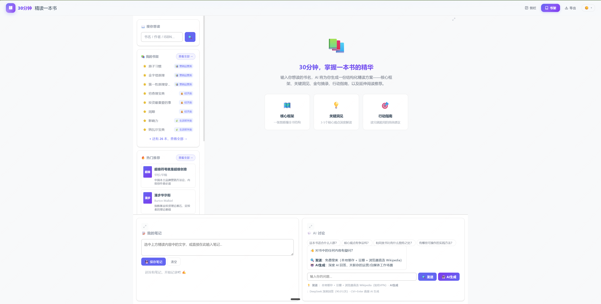
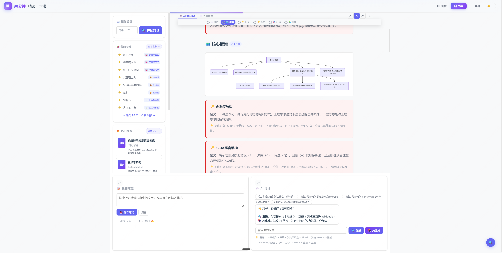

只需要提供书名
降低开始阅读和整理问题的门槛，不要求用户先设计复杂提示词。
从“如何在有限时间掌握一本书”出发，把 Agent、模型生成和 HTML 阅读界面组织成一条用户可理解、可行动的产品链路。
降低开始阅读和整理问题的门槛，不要求用户先设计复杂提示词。
围绕核心观点、关键章节和论证关系建立有限时间内的理解路径。
输出不仅有摘要，也包含可执行的行动建议和延伸方向。
下面使用实际产品的两张完整界面，分别展示如何找到一本书，以及选中书后如何完成结构化精读。点击图片可查看原尺寸。

通过“搜你想读”输入书名或作者，也可以从我的书架、热门推荐直接选择；首页同时保留笔记和 AI 讨论入口。

选中书后进入 AI 深度精读，按速览、框架、洞见、金句、行动与延伸六段阅读；可以在同一页记录笔记，并围绕书中内容继续追问。
搜索、书架和热门推荐共同降低开始门槛。
先建立框架，再阅读洞见、金句、行动和延伸内容。
笔记与 AI 讨论留在同一界面，让理解继续转成行动。
明确产品要帮助用户完成的任务，而不是从模型能力出发堆功能。
让核心观点、金句、行动指南和延伸推荐形成稳定结构。
围绕输入、等待、阅读和继续探索设计完整体验。
AI 协助实现，我负责判断内容结构、交互和结果是否符合用户任务。
用结构化表达降低长文本的理解负担。
帮助用户理解观点如何被论证，而不是只得到一句摘要。
提供行动指南和延伸推荐，让学习形成后续路径。
本案例证明从需求定义到可使用界面的完整产品实践。
当前公开页面只说明产品链路和设计判断，不提供私有网络演示入口。
动态边界：公开入口、缓存、成本和使用数据重新核验前不固定展示；未来取得公开演示地址后再单独增加产品入口。